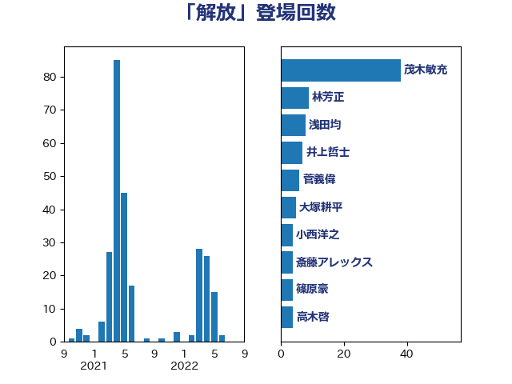

単語「解放」

| 茂木敏充 | 自由民主党 | 38 回 |
| 林芳正 | 自由民主党 | 9 回 |
| 浅田均 | 日本維新の会 | 8 回 |
| 井上哲士 | 日本共産党 | 7 回 |
| 菅義偉 | 自由民主党 | 6 回 |
| 大塚耕平 | 国民民主党 | 5 回 |
| 小西洋之 | 立憲民主党 | 4 回 |
| 斎藤アレックス | 国民民主党 | 4 回 |
| 篠原豪 | 立憲民主党 | 4 回 |
| 高木啓 | 自由民主党 | 4 回 |
| 鷲尾英一郎 | 自由民主党 | 4 回 |
| 山下貴司 | 自由民主党 | 3 回 |
| 柳ヶ瀬裕文 | 日本維新の会 | 3 回 |
| 伊波洋一 | 無所属 | 2 回 |
| 北村経夫 | 自由民主党 | 2 回 |
| 吉良州司 | 無所属 | 2 回 |
| 山崎誠 | 立憲民主党 | 2 回 |
| 杉田水脈 | 自由民主党 | 2 回 |
| 梶山弘志 | 自由民主党 | 2 回 |
| 浦野靖人 | 日本維新の会 | 2 回 |
| 田村憲久 | 自由民主党 | 2 回 |
| 田村智子 | 日本共産党 | 2 回 |
| 舟山康江 | 国民民主党 | 2 回 |
| 足立康史 | 日本維新の会 | 2 回 |
| 音喜多駿 | 日本維新の会 | 2 回 |
| ながえ孝子 | 無所属 | 1 回 |
| 世耕弘成 | 自由民主党 | 1 回 |
| 井上信治 | 自由民主党 | 1 回 |
| 伊藤孝恵 | 国民民主党 | 1 回 |
| 佐藤茂樹 | 公明党 | 1 回 |
| 倉林明子 | 日本共産党 | 1 回 |
| 前原誠司 | 国民民主党 | 1 回 |
| 勝目康 | 自由民主党 | 1 回 |
| 北神圭朗 | 無所属 | 1 回 |
| 古川俊治 | 自由民主党 | 1 回 |
| 吉田統彦 | 立憲民主党 | 1 回 |
| 國場幸之助 | 自由民主党 | 1 回 |
| 坂本哲志 | 自由民主党 | 1 回 |
| 大野泰正 | 自由民主党 | 1 回 |
| 宗清皇一 | 自由民主党 | 1 回 |
| 寺田学 | 立憲民主党 | 1 回 |
| 寺田静 | 無所属 | 1 回 |
| 小林鷹之 | 自由民主党 | 1 回 |
| 小田原潔 | 自由民主党 | 1 回 |
| 小野寺五典 | 自由民主党 | 1 回 |
| 山田勝彦 | 立憲民主党 | 1 回 |
| 山谷えり子 | 自由民主党 | 1 回 |
| 後藤茂之 | 自由民主党 | 1 回 |
| 徳永久志 | 立憲民主党 | 1 回 |
| 有村治子 | 自由民主党 | 1 回 |
| 本庄知史 | 立憲民主党 | 1 回 |
| 杉本和巳 | 日本維新の会 | 1 回 |
| 枝野幸男 | 立憲民主党 | 1 回 |
| 櫻井周 | 立憲民主党 | 1 回 |
| 熊谷裕人 | 立憲民主党 | 1 回 |
| 片山さつき | 自由民主党 | 1 回 |
| 石井苗子 | 日本維新の会 | 1 回 |
| 石橋通宏 | 立憲民主党 | 1 回 |
| 石田昌宏 | 自由民主党 | 1 回 |
| 穀田恵二 | 日本共産党 | 1 回 |
| 若宮健嗣 | 自由民主党 | 1 回 |
| 萩生田光一 | 自由民主党 | 1 回 |
| 谷川とむ | 自由民主党 | 1 回 |
| 赤池誠章 | 自由民主党 | 1 回 |
| 逢沢一郎 | 自由民主党 | 1 回 |
| 進藤金日子 | 自由民主党 | 1 回 |
| 重徳和彦 | 立憲民主党 | 1 回 |
| 鈴木俊一 | 自由民主党 | 1 回 |
| 鈴木宗男 | 日本維新の会 | 1 回 |
| 鈴木憲和 | 自由民主党 | 1 回 |
| 階猛 | 立憲民主党 | 1 回 |
| 須藤元気 | 無所属 | 1 回 |
| 馬場伸幸 | 日本維新の会 | 1 回 |
| 高木かおり | 日本維新の会 | 1 回 |
| 麻生太郎 | 自由民主党 | 1 回 |